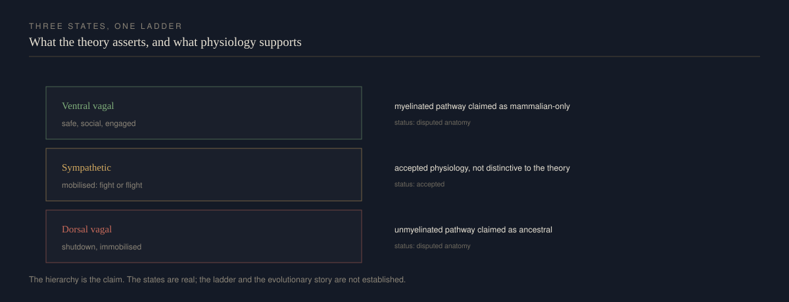

The claim
Stephen Porges proposed in the 1990s that the mammalian autonomic nervous system has three hierarchical states rather than two: a ventral vagal state of safety and social engagement, a sympathetic state of mobilisation (fight or flight), and a dorsal vagal state of shutdown and immobilisation. Trauma, on this account, is a nervous system stuck in the lower two, and therapy is the business of restoring ventral vagal tone.

The theory is widely used in trauma-informed practice, in polyvagal-informed therapy training, and in popular books about the nervous system. Its vocabulary — “regulated”, “dysregulated”, “stuck in dorsal” — has spread well beyond the clinical literature.
The anatomical problem
The theory's central anatomical claim is that a myelinated ventral vagal pathway is a mammalian innovation that supports social engagement, and that the dorsal vagus is an older, unmyelinated system. Comparative work finds myelinated vagal fibres in fish, amphibians and reptiles, and the dorsal/ventral division does not map onto the proposed evolutionary hierarchy. The “vagal brake” — respiratory sinus arrhythmia as an index of parasympathetic tone — is real, but it does not require the three-state architecture.
A 2007 critique in Biological Psychology argued that the theory's physiological predictions are not supported and that its evidence is largely indirect. Later reviews have been blunter: the model is not a validated account of autonomic function.
What is nonetheless true
The autonomic nervous system does have distinct states, and they do relate to threat, safety and social behaviour. Heart-rate variability does track parasympathetic activity, imperfectly. Breathing practices, safe relationships and predictability do help people who are traumatised. None of that depends on polyvagal theory being correct, and this is the important distinction: the clinical practices can work while the theory that motivates them is unsupported.
Fringe: widely taught, weak anatomical basis, limited independent empirical support, and a mechanism that specialists dispute.
Not debunked: parts of it overlap with accepted physiology, and the clinical observations it tries to explain are real. A wrong model of a real phenomenon is not the same as a hoax.
The risk: the vocabulary has become a way of explaining any behaviour after the fact, which is the same failure mode as Freudian drives — unfalsifiable, and therefore unhelpful when a patient does not improve.
The test the archive applies
Does the framework generate predictions that could fail? For polyvagal theory, the honest answer is that the anatomical prediction did fail, and the clinical predictions have not been tested in trials that could distinguish the model from the therapy. That is enough to file it here, and not enough to tell anyone to stop breathing slowly.
Sources for this page
- Wikipedia, “Polyvagal theory” — claims, use and criticismen.wikipedia.org
- Grossman & Taylor (2007), Biological Psychology — a critical evaluationdoi.org
- Wikipedia, “Vagus nerve” — anatomy of the tenth cranial nerveen.wikipedia.org
- Wikipedia, “Heart rate variability” — what RSA does and does not measureen.wikipedia.org
Cite this page
Momin, S. (2026). Polyvagal Theory. The Larger World Archive. https://drsamonline.github.io/LARGE_GLOBE/polyvagal-theory.htmlMomin, Sohil. “Polyvagal Theory.” The Larger World Archive, 2026, https://drsamonline.github.io/LARGE_GLOBE/polyvagal-theory.html.Momin, Sohil. “Polyvagal Theory.” The Larger World Archive, 2026. https://drsamonline.github.io/LARGE_GLOBE/polyvagal-theory.html.@misc{polyvagal2026polyvagal,
author = {Momin, Sohil},
title = {Polyvagal Theory},
year = {2026},
howpublished = {The Larger World Archive},
url = {https://drsamonline.github.io/LARGE_GLOBE/polyvagal-theory.html},
note = {Last reviewed 20 November 2026}
}Last reviewed 20 November 2026 · Corrections policy · this page is not peer reviewed